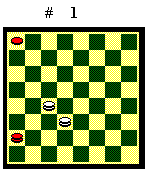
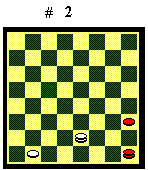
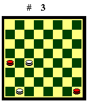
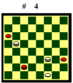
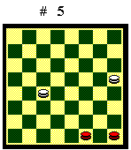

POSIZIONI TEORICHE
In questo articolo riporto le "posizioni
teoriche" e la chiusura di due dame contro due nel cantone che, per
la loro frequenza ed importanza, è bene conoscere.
Prima posizione

La "Prima Posizione" è un finale di quattro pezzi, disposti come nel Diagramma 1, in cui il Bianco ha la mossa in favore. La pedina può trovarsi indifferentemente in 1, 2, 9 o 17. Il Bianco vince in ogni caso.Se il Bianco non ha la mossa, il finale, che è talvolta detto "Falsa Prima Posizione", è pari.
Le linee di gioco sono nel capitolo
"Due dame contro una dama e una pedina".
Seconda posizione

La "Seconda Posizione" è un finale di quattro pezzi in cui il Bianco con una dama lega una dama e una pedina nere nel cantone, come nel Diagramma 2.Il Nero è costretto a muovere
la dama fra le case 32 e 28 perché se avanza la pedina il Bianco
vince con 27-31, e se porta la dama in 31, con la risposta 27-23 perde
un pezzo. Il Bianco vince damando la pedina (che può trovarsi anche
in altre posizioni) e portandola nella casa 19. Qui, se ha la mossa (muove
il Nero): 32-28, 27-31, 28-32, 19-23 Bv. Se non ha la mossa (muove il Bianco):
19-23, 24-28, 27-31 Bv.
Terza posizione

La "Terza Posizione" è un finale di quattro dame in cui una dama bianca ne chiude una nera a lato del biscacco, la seconda dama bianca è nel biscacco e la seconda dama nera nei pressi della base, come nel Diagramma 3.Il Bianco vince in ogni caso. Se
ha la mossa (muove il Nero), semplicemente chiudendo la dama nera in 32
(che può trovarsi anche in altre posizioni). Se non ha la mossa
(muove il Bianco) con il cambio 18-21, che inverte la mossa, e poi chiudendo
la dama nera.
Quarta posizione

Se entrambi i giocatori hanno tre pezzi, ma il Bianco riesce a ottenere tre dame contro una sola del Nero (due vantaggi di qualità), vince. Se le due pedine nere sono vicine e controllabili da una sola dama, la vittoria del Bianco è banale, potendo attaccare la dama nera con due dame. Se invece le pedine nere sono sulle sponde opposte, vince con una manovra più elaborata.Una posizione frequente in gioco vivo, da cui scaturisce questo tipo di finali, è la "Quarta Posizione", in cui due pedine si fronteggiano nella zona del cantone, come nel Diagramma 4. Mentre la pedina in 24 non può muoversi pena la cattura, quella in 31 può avanzare. Questa libertà di manovra, sommata al vantaggio di avere due dame contro una dama e una pedina nere, assicura al Bianco la vittoria. La condotta di gioco consiste nell'allontanare la dama nera dal biscacco inferiore e, impedendo l'avanzata delle pedine nere, portare a dama la pedina in 31.
Diagramma 4. Il Bianco muove (il Nero ha la mossa): 1.13-17 26-29 2.17-21 29-25 3.21-26 9-13 4.23-27 13-17 5.26-29 25-21 6.29-25 21-18 (se 21-26, 25-21, 26-30, 27-23 Bv) 7.27-30 18-22 8.25-21 22-19 (se 22-26, 30-27 Bv) 9.30-27 19-14 10.27-23 14-11 11.31-27 11-14 12.27-22 14-11 13.22-18 (se 22-19?, 11-15 il Bianco perde la pedina) 11-6 14.18-14 6-11 15.14-10 11-7 16.10-6 7-4 17. 6-3 4-8 18. 3-7 8-4 19. 7-12 4-8 20.23-20 8x15 21.20x11 24-28 22.11-15 28-31 23.15-19 31-27 24.21-25 27-30 25.19-22 il Bianco vince.
Il Nero muove (il Bianco ha la mossa): 1. 26-22 2.23-27 22-19 (se il Bianco ha la mossa, il Nero deve portare la dama verso il biscacco superiore, altrimenti perde per Prima Posizione) (A) 3.13-10 19-15 4.27-23 15-11 5.31-27 11-15 6.27-22 15-11 7.22-18 (se 22-19?, 11-15, 19-14, 15-19, 23-28, 9-13 patta) 11-15 8. 10-13 15-12 9. 18-14 ecc. Il Bianco dama e vince con la manovra già vista.
(A) - 2.22-26 3.13-17 26-29 4.27-22
29-25 5.22-18 25-29 6.17-21 29-25 7.18-13 il Bianco vince per Prima Posizione.
Due dame vs. due dame. Chiusura nel
cantone

L'unico caso in cui due dame, con la mossa in favore, riescono a chiudere due dame avversarie unite, si ha nel cantone.Diagramma 5. Il Bianco muove: 1.16-20 (A) 32-28 (se 31-28, 20-24, 28-31 [se 28-23, 18-22 Bv], 18-22 siamo al tronco. Se 31-27, 20-24, 27-31, 18-22 siamo al tronco) 2.18-22 28-32 3.20-24 (la casa 24 è la chiave della manovra vincente) 32-28 4.22-19 28-32 5.19-23 il Bianco vince.
(A) - 1.18-22? (perde un tempo decisivo)
31-28 2.16-20 28-24 il Nero prende la casa 24 e blocca l'attacco avversario.
Pari.